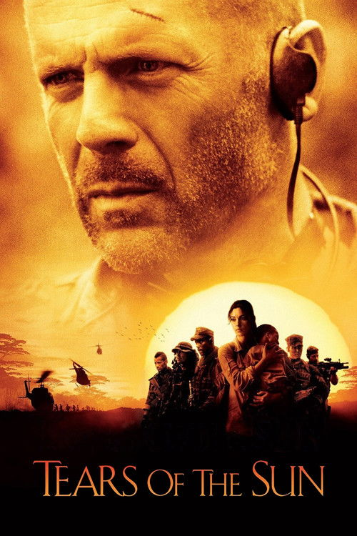

Tears of the Sun (2003)
الوصف: Navy SEAL Lieutenant A.K. Waters and his elite squadron of tactical specialists are forced to choose between their duty and their humanity, between following orders by ignoring the conflict that surrounds them, or finding the courage to follow their conscience and protect a group of innocent refugees. When the democratic government of Nigeria collapses and the country is taken over by a ruthless military dictator, Waters, a fiercely loyal and hardened veteran is dispatched on a routine mission to retrieve a Doctors Without Borders physician.
الممثلون
- Bruce Willis (Lieutenant A.K. Waters)
- Monica Bellucci (Dr. Lena Fiore Kendricks)
- Cole Hauser (James 'Red' Atkins)
- Eamonn Walker (Ellis 'Zee' Pettigrew)
- Johnny Messner (Kelly Lake)
- Nick Chinlund (Michael 'Slo' Slowenski)
- Tom Skerritt (Captain Bill Rhodes)
- Akosua Busia (Patience)
- Peter Mensah (Terwase)
- Malick Bowens (Colonel Idris Sadick)
المخرج: Antoine Fuqua
المنتج: Ian Bryce